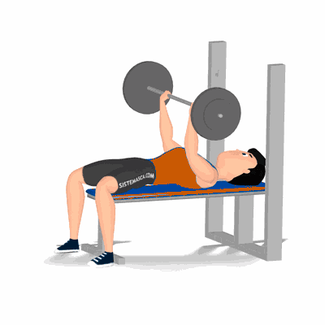

Tríceps Peito com Barra

Exercício para fortalecimento e hipertrofia dos músculos tríceps, com enfoque o tríceps braquial.
Ficha Técnica
Tipo: Musculação
Grupo Muscular: Tríceps
Aparelho: Nenhum
Músculos: Nenhum
Como realizar
- Deite sobre um banco com os joelhos flexionados e pés fixos no suporte;
- Com as costas levemente arqueadas, estabilize os glúteos no banco;
- Pegue a barra com as mãos próximas uma da outra em distância similar a largura dos ombros;
- Posicione a barra com os braços estendidos na linha do peitoral, essa é a posição inicial do exercício;
- Manter os punhos retos, flexione os cotovelos para baixo, descendo a barra de maneira controlada até a altura do peitoral;
- Empurre a barra para cima concentrando a força nos músculos dos tríceps;
- Repita os movimentos, conforme o número de repetições orientado pelo o professor.
 RC STORE
RC STORE